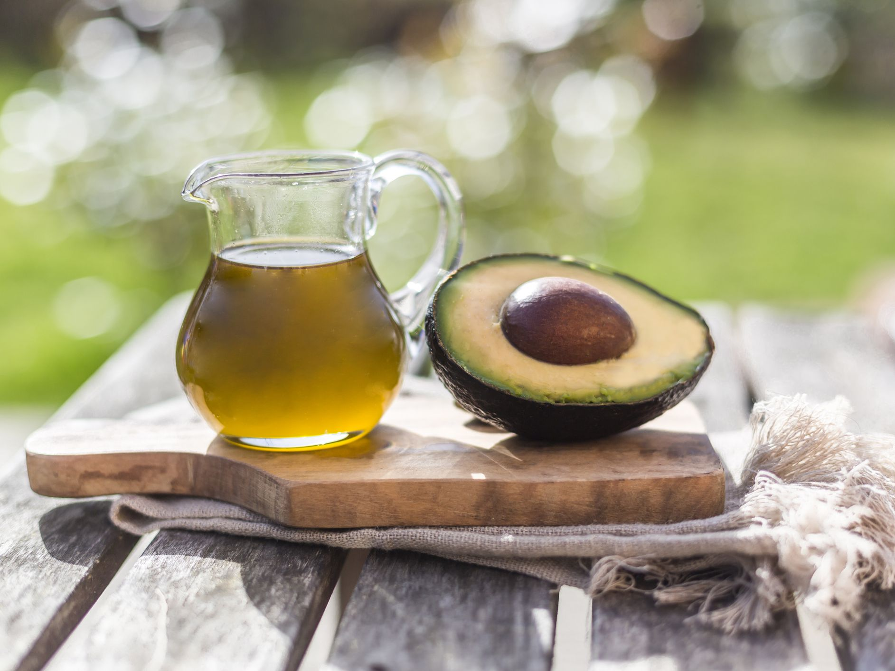
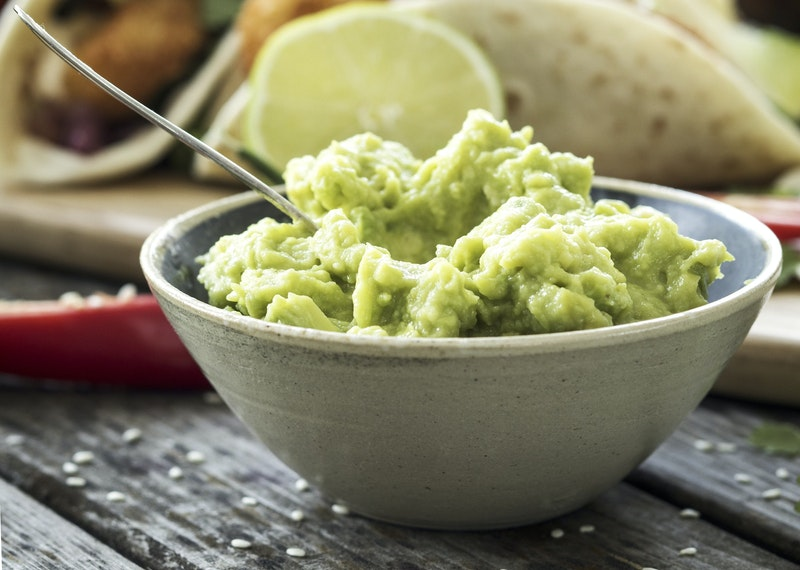

Avocados
About
Avocado is colloquially known as the Alligator Pear because it reflects its shape and the leather-like appearance of its skin. They are commercially priceless and are cultivated in tropical and Mediterranean climates throughout the world. With that said, it varies in weight, ranging from 8 ounces to 3 pounds depending upon the variety of avocado.
Depending upon type and variety, avocados vary greatly in shape, size, and color. Most of them tend to be pear-shaped, but some are almost spherical. Some have rough or leathery textured skin, while others have smooth skin with a shade of green color.
The color ranges from green to maroon, brown or purplish-black as they ripen. Avocados become very soft when they are ripened properly. Ripening process normally takes 3 to 5 days at room temperature. Ripening can be slowed down by refrigeration.
Avocados with dark sunken spots, irregular patches, cracked or broken surfaces which are the signs of decay should be avoided.
Products made from bananas
-
Avocado oil is an edible oil extracted from the pulp of avocados, the fruit of Persea americana. It is used as an edible oil both raw and for cooking, where it is noted for its high smoke point. It is also used for lubrication and in cosmetics. Avocado oil has an unusually high smoke point: 250 °C (482 °F) for unrefined oil and 271 °C (520 °F) for refined. The exact smoke point depends heavily on the quality of refinement and the way the oil is stored.
-
Guacamole is an avocado-based dip, spread, or salad first developed in Mexico. In addition to its use in modern Mexican cuisine, it has become part of international and American cuisine as a dip, condiment and salad ingredient. Guacamole is traditionally made by mashing peeled, ripe avocados and salt with a molcajete y tejolote (mortar and pestle). Recipes often call for lime juice, cilantro, onions, and jalapeños. Some non-traditional recipes may call for sour cream, tomatoes, basil, or peas.